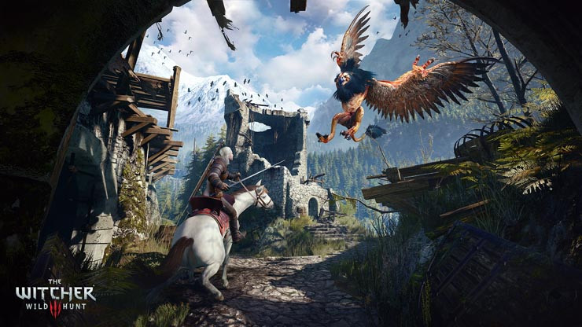
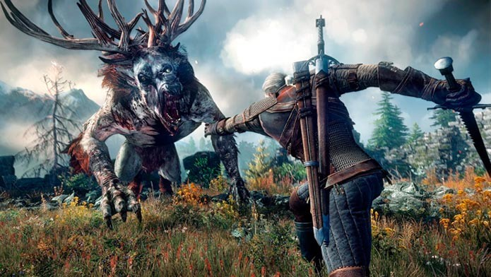

Home > Todas as Notícias > The Witcher 3: Wild Hunt Review
THE WITCHER 3: WILD HUNT REVIEW
O que nos deixa tão empolgados com uma nova geração de consoles? Novas tecnologias? Um hardware bonitão cheio de recursos? Gráficos incríveis? Não, essas são apenas as camadas mais superficiais dentre as expectativas que cercam uma mudança de geração. O que faz um jogador se arrepiar de verdade com a chegada de um novo console é a perspectiva de encontrar experiências maravilhosas que o seu velho e empoeirado videogame simplesmente não seria capaz de proporcionar.
É a ânsia por um novo Super Mario 64. Um novo Metal Gear Solid. Um novo Half-Life. Games revolucionários que mudam não apenas a maneira como encaramos gêneros inteiros, mas também definem o que podemos esperar para o futuro da mídia. Experiências que serão lembradas não apenas por serem excelentes por si só, mas por marcar a história dos videogames de maneira definitiva. The Witcher 3: Wild Hunt é, sem sombra de dúvidas, um desse jogos.
Admirável mundo velho
A primeira e mais marcante impressão que The Witcher 3 vai deixar em qualquer jogador é seu tamanho. O conceito de mundo aberto, aqui, é elevado à décima potência. A vastidão dos mapas do jogo é de derrubar queixos, e sem o minimapa que nos é fornecido poderíamos facilmente nos perder entre as florestas, vilas, pântanos, mares e imensas cidades que Geralt pode explorar. Pela primeira vez em um jogo de videogame, senti-me verdadeiramente pequeno diante do universo que me era apresentado.
Há também uma atenção incrível aos detalhes desse mundo. Cavernas parecem ter sido escavadas à mão, uma por uma, pelos artistas do jogo. Campos de batalha, com corpos de soldados e seus cavalos mortos espalhados entre lamaçais, parecem exalar o cheiro de carne podre e sangue coagulado. Nas vilas de camponeses você encontra crianças brincando nas soleiras das portas, bêbados cambaleando em frente aos bordéis e fazendeiros cuidando de suas plantações. A sensação que temos é de que aqueles Reinos Nórdicos continuariam a existir com ou sem as intervenções de nosso protagonista. Infelizmente, toda essa vastidão e detalhamento parecem ser muito para os consoles de nova geração.
Em alguns momentos mais agitados, o jogo não conseguiu manter a taxa de quadros constante em 30 frames por segundo -- nada, no entanto, que tenha afetado minha experiência de maneira significativa.
Mas não é apenas um mundo bem construído e vasto. Ele também é incrivelmente denso para um jogo tão amplo. Mesmo quando comparado a outros jogos de mundo aberto competentes como Fallout 3 ou Dragon Age Inquisition, The Witcher 3 se supera na capacidade de preencher-se com oportunidades, encontros e acontecimentos interessantes. Não estamos falando apenas de um imenso mapa. Estamos falando de um imenso mapa que vale a pena ser explorado, de cabo à rabo, porque essa exploração será devidamente recompensada. Basta cavalgar alguns minutos à esmo para acabarmos encontrando, por acaso, um camponês pedindo por ajuda ou um ninho de monstros para ser destruído. Ou uma emboscada de bandidos, ou um calabouço de um mago antigo, ou uma estátua que melhora seus poderes...
A impressão que fica, após algumas horas vivendo no mundo de The Witcher 3, é a de que estamos experimentando uma segunda realidade. Diferente de outros jogos de mundo aberto, em que geralmente o universo existe em função dos nossos heróis, Wild Hunt indica, constantemente, que você é apenas mais uma pequena peça no imenso quebra cabeça daquele mundo que é muito mais velho, muito mais complexo, do que a sua mera existência.
É uma sensação próxima da que tive enquanto jogava, anos atrás, Red Dead Redemption, apenas em uma escala muito maior. Uma das maiores qualidades do clássico da Rockstar era transmitir para nós, através de sua narrativa, a noção de que o mundo não estava lá para se dobrar ao nosso dispor. De que eramos pequenos diante do mundo, e que nossas influências sobre ele dependiam inteiramente do quanto desejávamos nos empenhar para causar algum impacto. A competente narrativa de Witcher 3 consegue causar em nós exatamente esse efeito.
A jornada do profissional
Quando finalmente nos aclimatamos ao mundo gigantesco e denso que The Witcher 3 nos oferece para explorar, o segundo grande impacto que o game nos causa vêm de sua narrativa. Coesa, coerente e pouco habitual, a jornada de Geralt de Rivia não é a de um herói típico. E a capacidade de encapsular uma trama constantemente interessante mesmo em um mundo tão complexo e cheio de digressões é o que eleva Wild Hunt para além de uma experiência como a de Skyrim.
Em vez de um mundo em que muitas vezes a importância que nos é dada pela história é muito maior do que conseguimos sentir através de nossas ações, em que o universo depende da nossa salvação enquanto preparamos um cozido de coelhos ou brincamos de empurrar velhos de cima de montanhas usando nossos gritos, The Witcher 3 conta uma história pessoal, quase íntima, e salpica essa aventura com acontecimentos mundanos que podem assumir proporções gigantescas dependendo de como escolhemos lidar com elas.
Geralt é um caçador de monstros, um bruxo que faz o que faz não apenas pela bondade de seu coração ou pela indiferença cruel de um vilão. Ele é um profissional, que negocia pagamentos e discute termos de contrato. Quando, por ventura, ele decide interferir em assuntos que não são de sua conta, as consequências desses atos reverberam por toda a linha narrativa do jogo. Mate soldados de um barão ganancioso porque eles estão aterrorizando um vilarejo e isso nunca será esquecido. Todos os seus encontros com soldados do mesmo barão, daqui em diante, serão pontuados pelo rancor e desejo de vingança daqueles que você afetou.
Isso faz toda a diferença na hora de traçar nossos próprios rumos pelo mundo que nos é apresentado. Sem um medidor de moralidade e sem um marcador claro entre o que é bom ou ruim, a ética de Geralt é tão cinza quanto seus cabelos. Pague-me, e eu me livro daquele monstro. Quer um desconto? Tudo bem. Mas não abuse da minha boa vontade, porque assim como o mundo não me perdoa por minhas escolhas, eu também não perdoarei quem tentar me passar a perna.
Geralt é um dos personagens mais completos e interessantes que um jogo de mundo aberto já nos forneceu, mas seu elenco de apoio merece tantos elogios quanto o Bruxo. Ao longo de toda a aventura de Wild Hunt, encontramos seres humanos (ou elfos, ou anões) complexos, coerentes e que olham o mundo através de suas próprias lentes -- sejam elas sujas ou inocentes. Todos têm interesses próprios, todos escondem algumas verdades por trás de boas (ou más) intenções. Remover as máscaras das pessoas com quem você lida ao longo do jogo é mais um dos desafios de The Witcher 3. Um desafio que dá mais realismo a um mundo que poderia, facilmente, cair na armadilha dos coadjuvantes sem alma e das missões de pombo-correio que encaramos em tantos mundos abertos por aí.
Novo RPG à moda antiga
Livre da obrigação de nos oferecer um sistema de criação de personagens, The Witcher 3 consegue focar nas mecânicas realmente relevantes para a construção de um RPG. E ele faz isso com um imenso respeito ao seu próprio passado e ao passado do gênero, mas sem deixar de inovar no processo.
The Witcher assume, em certos momentos, o risco de soar antiquado. Mas faz isso em favor de oferecer ao jogador a complexidade e a versatilidade que esperamos de um bom RPG. Os sistemas de fabricação de itens, evolução de personagem e criação de poções é tão profundo e detalhado que é praticamente impossível não se sentir um tanto exasperado nas primeiras horas de jogatina. Mas tão logo você entende o quão dinâmico o jogo se torna por conta deles e essa sensação é substituída por uma curiosidade e fascínio que apenas clássicos como Baldur’s Gate e Neverwinter Nights conseguiam nos oferecer.
Abandonando a simplificação extremada dos games modernos e exigindo do jogador um tanto de paciência e dedicação para formular o personagem com quem deseja jogar, The Witcher 3 consegue não apenas adicionar mais profundidade ainda à um universo que parece não ter fim, como também nos fornece um dos sistemas de combate em tempo real mais versáteis e emocionantes que já encarei em um RPG. Desafiadoras, as lutas exigem que você pense rápido ao mesmo tempo que elabora uma estratégia diferente para cada tipo de inimigo que encontra.
É claro que apenas atacar, se esquivar e defender nas horas certas funciona, mas fazer apenas isso é subestimar a capacidade de Geralt. Estamos falando de um game que exige que você estude os monstros que vai encarar, entenda suas fraquezas e utilize-as ao seu favor. Não subestime o que um óleo especial para untar sua espada pode fazer pelo seu dano contra um monstro que é fraco contra aquele elemento, ou o impacto que a magia correta contra a criatura correta pode ter. Essa é diferença entre um mero apertar de botões na hora certa e o combate que The Witcher 3 oferece.
Feito com Sazon
Dentro da caixa de The Witcher 3: Wild Hunt que recebemos para revisar o jogo, encontramos além do jogo, um CD com trilha sonora, um mapa, um compêndio que explica o universo do game para jogadores novatos e -- pasmem! -- até mesmo um manual de instruções. Essa é a edição básica do jogo. Tudo isso, além dos 16 DLCs grátis prometidos pelos desenvolvedores, seriam bons extras para uma experiência já bastante completa. Mas o que realmente me chamou a atenção foi uma cartinha escrita pela CD Projekt RED. Nele, o estúdio agradece pela aquisição do game. “Mais de 200 de nós passaram os últimos 3 anos trabalhando em The Witcher 3: Wild Hunt, e é com grande prazer e humildade que trazemos este jogo até você.”
Essa carta de agradecimento não seria digna de nota no review caso ela não refletisse o que senti ao jogar The Witcher 3. Esse é um jogo feito com amor por pessoas que realmente gostam do que fazem. Há uma minúcia, uma preocupação com detalhes e um respeito imenso pelo universo que eles se propuseram a transcrever para o game. The Witcher 3 é um caso raro no mundo de hoje.
Dos gráficos espetaculares à trilha sonora, dos diálogos inteligentes e bem humorados à localização extremamente competente para o português do Brasil, esse é um jogo que vai além do meramente comercial. Ele foi tratado por seus desenvolvedores como uma obra de arte, e é isso o que sentimos, em um crescendo constante, da primeira vez que montamos em nosso cavalo Carpeado e cavalgamos em direção ao pôr do sol até a explosiva e emocionante batalha final.
Quem deve jogar esse jogo
Qualquer fã de RPG deve ter The Witcher 3 em seu currículo, independente de já ter encarado os games anteriores da franquia ou não. O jogo consegue se explicar de maneira competente e interessante para os novatos enquanto aprofunda os laços criados por seus veteranos ao longo da trilogia. Mas fique avisado que essa é uma experiência que vai exigir muito, mas muito, do seu tempo. Não jogue Wild Hunt com pressa ou preocupado com a vida real, e você terá uma experiência incrível independente do seu histórico como jogador de RPG.
O VEREDICTO
The Witcher 3: Wild Hunt é uma obra-prima. Supera outras experiências de mundo aberto em amplitude e profundidade sem deixar de nos oferecer uma narrativa coesa e interessante ou emburrecer suas mecânicas a ponto de se tornar simplório. Com grandes personagens, um combate divertido e desafiador e centenas de horas de conteúdo, a CD Projekt RED encerra a trilogia de Geralt de Rivia de maneira que beira a perfeição -- salvo alguns problemas técnicos que devem ser corrigidos nas próximas atualizações. Agora, se me der licença, eu tenho um mundo inteiro para desbravar e centenas de monstros para caçar. Te vejo no ano que vem.
Topo